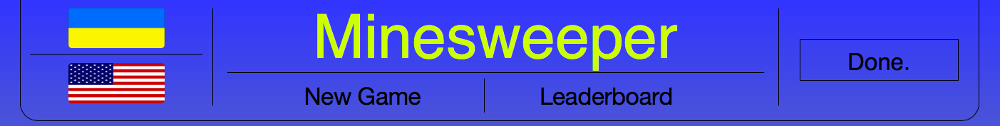
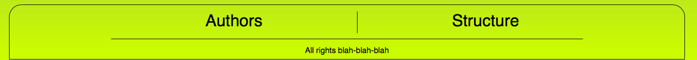
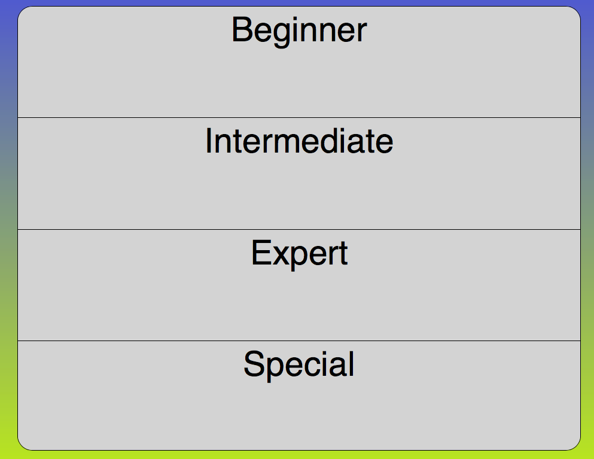
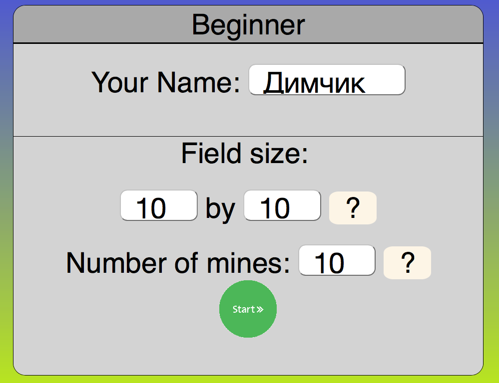
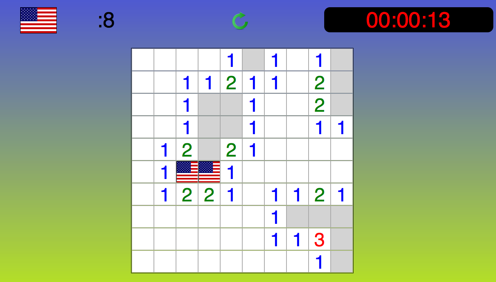
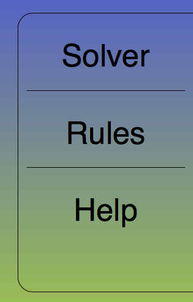
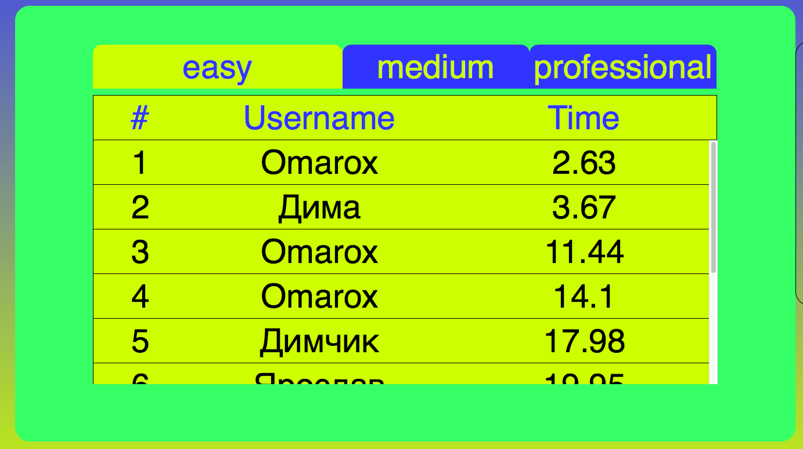

Usage Instructions

Here is our header.
-
You may change your language to English or Ukrainian by clicking the flag.
-
Clicking "New Game" will lead you to new game setup.
-
"LeaderBoard" will open our achievements table.

Here is our footer.
-
"Authors" will show you information about us - developers of this project.
-
"Poster" will show the picture of the project's technical structure.

This panel allows you to select the mode of the game.

Clicking either mode will bring you to this view.
Here you may change parameters of a game, if you wish.

This is the most interesting part - the game.
Here you may find the number of flags that you still need to set, timer, reset button and field.

The right bar allows you to run solver for the game, see the rules of a game and these instructions.

Here is our Leader-board.
-
Here you may find best 100 scores for best 100 different players for 3 modes.